O Litch
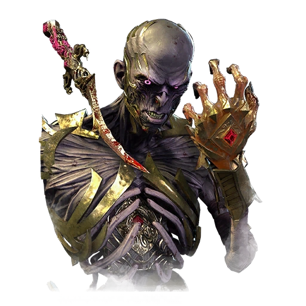O Dracula
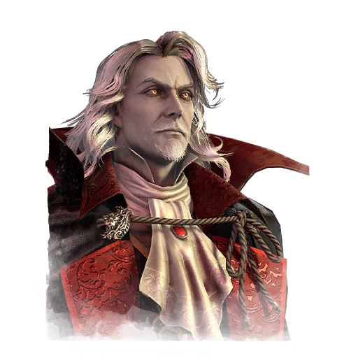O Cara Legal
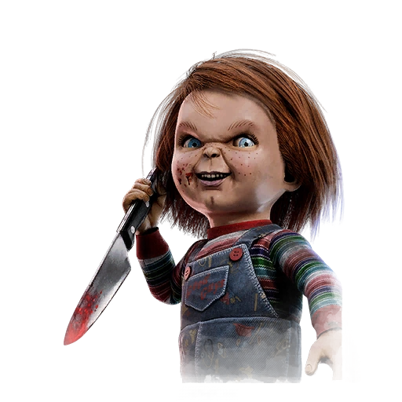O Ghoul
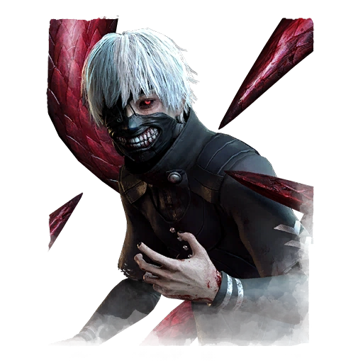O Xenomofo
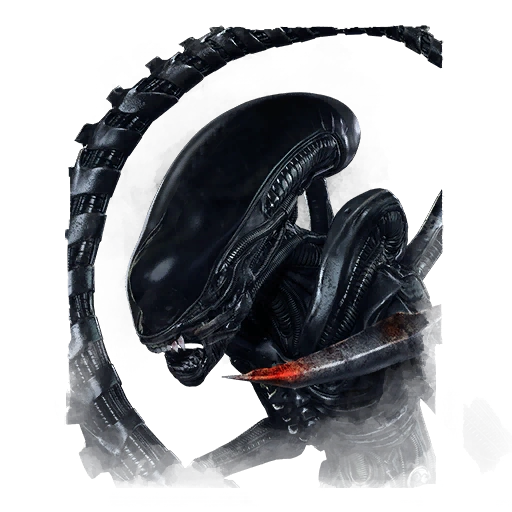Ghostface
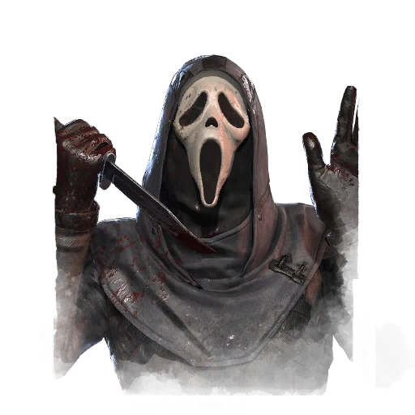O Litch
O Sussurrado. Senhor da Torre Pútrida. O Mestre dos Segredos. Poucos ousam falar o verdadeiro nome dele, por temer que ele ouça... ou aconteça algo ainda pior.
Mesmo quando era um jovem feiticeiro, o domínio da magia de Vecna não era igualado por mais ninguém. Enquanto outros passaram décadas estudando e tentando aperfeiçoar suas magias, ele dominou cada uma delas sem nenhum esforço. Depois que sua mãe foi executada por bruxaria, seu foco se tornou uma obsessão e ele se debruçou em seus estudos na escola de magia mais sombria de todas: a necromancia, a magia da vida e da morte.
À medida que seu poder crescia, também crescia sua ambição. Ao longo dos séculos, ele abandonou seu corpo mortal e ascendeu ao reino de Lich. Seu poder deu origem a um grande império dominado pela sua Torre Pútrida.
Sua sede por conhecimento sombrio para preencher seu Livro Vil da Escuridão o levou a muitos reinos e planos. Mas foi em seu próprio reino que um de seus lacaios descobriu uma coisa: um feitiço que talvez tenha sido retirado de um livro antigo, escrito em um idioma jamais visto. Dele, emanava uma enorme energia sombria. Sem nenhuma informação sobre aquele idioma, ele teve que passar meses analisando minuciosamente sua sintaxe, fonética e forma. Ele documentou cada ínfimo traço de cada letra, examinando e teorizando seus significados, produzindo um denso livro que foi escondido em seus aposentos. Quando seus tenentes o procuravam com problemas em seus domínios, Vecna ordenava que resolvessem sozinhos. Ele tinha algo mais importante a fazer.
Ele passou inúmeras noites memorizando o roteiro estranho, tentando encaixar as peças. Ocasionalmente, ele saía de sua fortaleza para investigar rumores de pessoas que haviam desaparecido à noite sem deixar vestígios. Nesses locais, ele sentia a mesma magia estranha que emanava da página rasgada. Ele estava convencido de que a coisa que estava matando aquelas pessoas também tinha escrito este estranho texto.
Ele ficou confuso, e isso o deixou furioso. As cenas encontradas, espaçadas umas da outras, não tinham padrão, nenhum motivo em comum. Nenhum sinal de confronto, nenhum corpo, apenas um zumbido persistente de energia sombria. Para que fim precisava desses corpos?
Em uma noite escura, ele fez uma descoberta: uma palavra que havia sido interpretada como "morrer" passou a fazer mais sentido como "desaparecer". Talvez, essas pessoas não tinham morrido, mas sim capturadas. Ele fez essa alteração em suas anotações e tudo passou a fazer sentido.
Ele copiou o que havia aprendido em um novo pergaminho, escrito foneticamente. Ele começou a proferir aquelas palavras em voz alta e o quarto escureceu. O local foi preenchido por uma névoa sombria aterrorizante. Ele sentiu a mudança de espaço, havia sido transportado para outro lugar. Vecna resistiu, recitando feitiços memorizados, mantendo a névoa sob controle. Mas ao olhar para a escuridão, ele sentiu aquela energia atraente: o desespero, um mal que não conseguia imaginar. Uma curiosidade doentia tomou conta de seu corpo, ele perdeu a concentração e deixou que a névoa o consumisse. O que quer que fosse, onde quer que estivesse, ele sabia que a única maneira de a controlar era se submetendo a ela. Ele sabia no fundo de seu coração frio e inabalável que os segredos obscuros da névoa um dia seriam dele.
Arrogancia Sombria
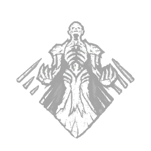
Quando tudo está indo bem, você é uma inevitabilidade inescapável.
Aumenta sua velocidade de salto em troca de maior vulnerabilidade a cegueira e atordoamento:
Aumenta permanentemente a duração de Killer Blinds por qualquer meio e a duração de Pallet Stuns em +25%
.
Aumenta permanentemente sua velocidade de salto em 15 / 20 / 25 %.
"Corra o quanto quiser. Não serei impedido." — Vecna
Toque Lânguido
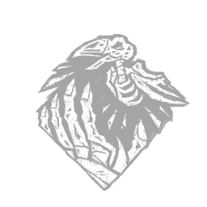
Sua aura terrível é tão sufocante que até cenas aterrorizantes cansam sua presa.
Quando um sobrevivente espanta um corvo a até 36 metros de sua localização, o Languid Touch ativa:
Causas que fazem o Sobrevivente sofrer com a Exaustão Efeito de status por 6 / 8 / 10 segundos.
O Toque Lânguido tem um tempo de espera de 5 segundos.
"Submeta-se a mim. É inevitável." — Vecna
Sintonização de Tecelagem
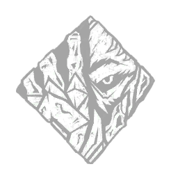
Você está tão sintonizado com energias mágicas que consegue sentir até pequenas ondulações em torno de encantamentos.
Sempre que um item é esgotado pela primeira vez, ele é descartado automaticamente:
As Auras de Itens de Sobreviventes derrubados são revelados a você, assim como as Auras de quaisquer Sobreviventes a até 8 metros deles.
Os sobreviventes afetados também veem a aura daquele item.
Faz com que os sobreviventes que pegarem um item de sobrevivente sofram com o esquecimento Efeito de status por 20 / 25 / 30 segundos.
"Nenhuma novidade irá te proteger de mim!" — Vecna
O Dracula
A dor inconsolável transformou-se em loucura após a morte da amada de Drácula. Ele buscou a lendária Pedra Carmesim como uma forma de escapar da morte, mas a morte aprisionou sua alma dentro da pedra, concedendo-lhe a vida eterna como vampiro. Vlad Tepes Drácula era agora o Lorde das Trevas. Ele dormia durante o dia e caçava ao entardecer, buscando os vivos e roubando seu sangue vital. Ele construiu um castelo na Romênia, protegido por magia sinistra, e transformou muitos dos aldeões locais em mortos-vivos. O Castelo de Drácula tornou-se um símbolo de terror e desespero. Seu poder parecia inexpugnável e muitos pereceram tentando derrotá-lo enquanto ele semeava caos, sofrimento e morte sem fim.
Em 1476, Trevor Belmont, do Clã Belmont, pôs fim ao reinado de Drácula com o Matador de Vampiros. Mas os mortos-vivos nunca permanecem mortos por muito tempo, e Drácula foi ressuscitado mais de uma vez ao longo dos séculos para continuar sua busca por vingança.
Ressuscitado pela última vez em 1999, Drácula reuniu um exército de mortos-vivos. Foi preciso outro descendente do Clã Belmont para derrotá-lo: Júlio Belmont. No confronto selvagem, conhecido como a Batalha de 1999, Júlio Belmont levou a luta ao Castelo de Drácula e lutou contra o Lorde das Trevas com o mesmo chicote encantado que seus ancestrais distantes empunhavam. A maioria acredita que Drácula sofreu uma morte verdadeira. Uma morte final. Mas Drácula não morreu naquela noite. Enquanto o Assassino de Vampiros arrancava a carne de seus ossos, uma névoa estranha se espalhava pelo antigo chão de pedra. Drácula sentiu os dedos gelados de algo ou alguém o chamando. A névoa o engolfou e o transportou para um lugar onde ele poderia continuar sua vingança sombria contra a humanidade.
Domínio
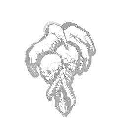
O poder que você exerce sobre a terra causa terror nos corações de todos que cruzam seu caminho.
A primeira vez que cada Baú e cada Totem são interagidos por um Sobrevivente, a Dominância ativa seu efeito:
Apela à Entidade para bloqueá-lo por 8 / 12 / 16 segundos.
A Aura do Prop bloqueado é revelado a você em branco.
"Trágico, não é? Como você deve se sentir impotente." — Drácula
Hex: Destino Miserável
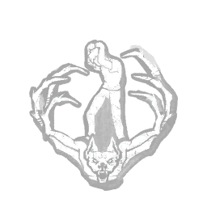
Você vê sua vítima de longe e decide prolongar seu sofrimento.
Depois de um gerador estiver concluído, Hex: Wretched Fate ativa e acende um Dull Totem aleatório, amaldiçoando a Obsessão:
Reduz a velocidade de reparo em 27 / 30 / 33 %.
A Aurado Totem Hex é revelado a eles em 12 metros.
"Então trabalhe duro, mortal, trabalhe duro! Seu esforço será em vão!" — Drácula
Ganância Humana
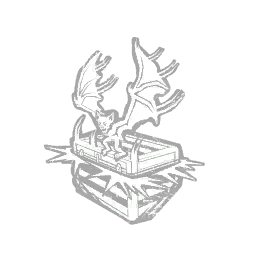
Sempre podemos confiar na avareza dos vivos e usá-la em nosso benefício.
Concede a habilidade de chutar baús abertos e fechá-los.
As Aurasde baús fechados são revelados a você o tempo todo.
As Auras dos Sobreviventes que se aproximam a 8 metros de Baús fechados ou fechados são reveladas a você por 3 segundos.
A Ganância Humana tem um tempo de recarga de 30/25/20 segundos na habilidade de chutar Baús.
"Venham correndo, todos, e vejam que fortuna os aguarda." — Drácula
O Cara Legal
Charles Lee Ray, o infame Estrangulador de Lakeshore, foi perseguido e baleado após uma onda de assassinatos. No entanto, ele escapou da morte ao possuir sua alma em um boneco dos Good Guys chamado Chucky por meio de uma maldição.
Chucky não queria continuar sendo um mocinho para sempre, e sabia que só havia uma maneira de mudar isso: levar o corpo de Andy Barclay, a primeira pessoa a quem ele havia revelado seu segredo. Depois que sua primeira tentativa falhou, Chucky esperou dois longos anos antes de reencontrar Andy.
Sem ninguém entre Chucky e Andy, ele levou o garoto para a fábrica Good Guy para completar o processo de roubo do corpo de Andy. Mas a irmã adotiva de Andy, Kyle, percebeu que algo estava errado e seguiu Andy até a fábrica.
Dentro da fábrica, Chucky forçou Andy a se deitar no chão e proferiu palavras ancestrais para tomar posse de seu corpo. Mas o ritual não saiu como planejado e Kyle, rápida e desesperadamente, derrubou uma pilha de caixas do Mocinho sobre ele.
Chucky gritou de frustração enquanto abria caminho pela pilha de caixas. Recuperando a razão, olhou para o corredor bem iluminado e viu Andy correndo em direção a uma névoa espessa e rodopiante. A princípio, achou que estava vendo coisas, mas depois percebeu que a névoa era real e estava ali para ajudá-lo. Suas palavras não funcionaram como o esperado, mas de alguma forma ele conjurou algo diferente, algo inesperado, algo que ele não entendia direito.
E não querendo perder sua única chance de ter um corpo de verdade, ele avançou pela névoa gritando atrás de Andy.
Pilhas incluídas
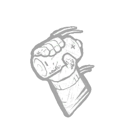
Estar em algum lugar entre o homem e a máquina tem suas vantagens.
Sempre que você estiver a 12 metros de um gerador concluído, você ganha +5% de Aceleração Efeito de status.
Este efeito permanece por 1 / 3 / 5 segundo(s) após sair do alcance do Gerador.
"Surpresa! Sentiu minha falta, Andy?" — Chucky
Amigos até o fim
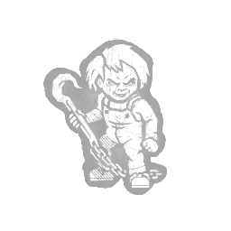
Você matará qualquer um que ficar entre você e seu alvo.
Quando você fisga qualquer sobrevivente que não seja a obsessão, os seguintes efeitos se aplicam à Obsessão:
A aura deles é revelado por 6 / 8 / 10 segundos.
Eles sofrem com a exposição Efeito de status por 20 segundos.
Quando você engata a Obsessão , os seguintes efeitos são aplicados a um Sobrevivente aleatório:
Faz o Sobrevivente gritar e revelar sua localização ao Assassino.
Eles se tornam a nova Obsessão.
Você só pode ficar obcecado por um Sobrevivente por vez.
"Tenho carne fresca guardada e não vou deixar você estragá-la, não desta vez!" — Chucky
Hex: Dois Podem Jogar
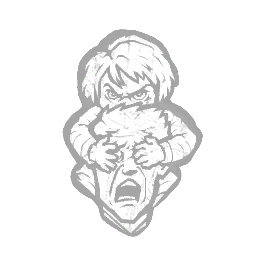
Um feitiço que ensina uma lição àqueles que se metem com você.
Sempre que você for atordoado ou cegado por qualquer Sobrevivente um total de 4 / 3 / 2 vezes , e se ainda não houver um Totem Hexjá associado a Hex: Two Can Play e há pelo menos um Dull Totem permanecendo no Trial Grounds, Hex: Two Can Play ativa em um Totem aleatório:
Cegante todos os sobreviventes que atordoarem ou deixarem você cego por 1,5 segundos.
Isso não afeta os Sobreviventes carregados.
Todos os efeitos do Hex Perk persistem até que seu Hex Totem é purificado ou abençoado.
"De agora em diante, chega de Sr. Mocinho." — Chucky
O Ghoul
Ken Kaneki era um garoto gentil e bondoso que vivia uma vida simples, estudando literatura na Universidade Kamii, antes de um encontro casual virar sua vida de cabeça para baixo.
Ele e seu amigo Hide frequentavam o café Anteiku, onde uma das frequentadoras chamou sua atenção: Rize Kamishiro . Ela compartilhava sua paixão pela leitura, e ele a viu até mesmo lendo o mesmo romance que ele. Ele criou coragem para convidá-la para um encontro. Enquanto a acompanhava para casa, Rize mostrou sua verdadeira face: a de uma ghoul conhecida como A Devoradora Compulsiva. Ela se banqueteou com a carne dele, quase o matando, até que um acidente de construção bizarro causou sua morte, e quase causou a dele também.
Para salvar sua vida, os médicos transplantaram os órgãos de Rize para Kaneki. Ele sobreviveu à cirurgia, mas algo estava errado... a comida perdeu o sabor e desejos estranhos o perseguiam. A cirurgia que salvou sua vida o tornou parte ghoul.
Confuso e com medo, ele seguiu seus instintos até um beco onde encontrou Touka, uma das funcionárias da Anteiku. Chocada com sua transformação, ela o levou de volta ao café. Ele ficou surpreso ao descobrir que os funcionários da Anteiku eram ghouls. Eles o acolheram, ajudando-o a se adaptar à nova realidade. Ele aprendeu a lutar com seus novos poderes, a lidar com seus desejos perturbadores de matar e comer carne humana e a se manter um passo à frente do CCG.
Sua adaptação à nova vida foi cruelmente interrompida quando ele foi sequestrado e submetido a torturas físicas e mentais sem precedentes nas mãos de um Ghoul particularmente cruel chamado Jason. Os exercícios de controle e a violência profunda de seu captor foram tão diabólicos que destruíram a mente de Kaneki, despojando-o do que antes o tornava humano. Seu senso de identidade foi destruído, e Rize preencheu o vazio, encorajando-o a assumir o controle de sua própria vida.
E o controle foi o que ele conquistou, retribuindo a violência de Jason na mesma moeda. Ele se libertou e lutou contra seu captor. A tortura o deixou insensível à dor, e sua psique despedaçada não lhe deixou espaço para hesitação. Ele derrotou Jason após uma curta batalha e o devorou.
Ele havia sido arrastado para um pesadelo como um garoto atormentado, mas saiu como um poderoso ghoul. Considerou o que isso significaria enquanto abria caminho através das pesadas portas e mal percebeu uma névoa negra se acumulando ao redor de seus pés. Saiu, confiante de que a tortura havia acabado. Mas, ao observar os arredores, percebeu que talvez ela estivesse apenas começando.
Para sempre entrelaçados
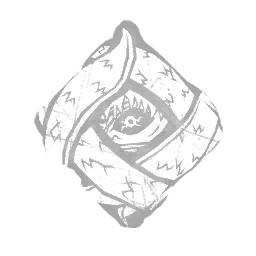
"Quanto maior a luta, mais difícil a fuga."
Sempre que um Sobrevivente sofre dano, o Para Sempre Entrelaçado ganha +1 Ficha , até um máximo de 6 / 7 / 8 Fichas:
Aumenta a velocidade de ação para soltar, enganchar e pegar um sobrevivente em +4% por ficha, acumulável, até um máximo de 24 / 28 / 32 %.
"Você tentou me devorar, então não tem do que reclamar se eu te comer, não é?" — Ken Kaneki
Hex: Nada Além de Miséria
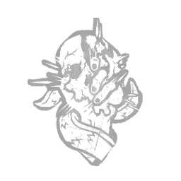
"Você foi levado às profundezas da dor e agora está pronto para infligir essa dor aos outros."
Depois de causar dano aos Sobreviventes um total de 8 vezes com Ataques Básicos, um Totem Opaco aleatório torna-se um Totem Hex, amaldiçoando todos os sobreviventes:
Sobreviventes danificados por um Ataque Básico sofrem uma redução de -5% Efeito de status por 10 / 12,5 / 15 segundos.
Todos os efeitos do Hex Perk persistem até que seu Hex Totem é purificado ou abençoado.
"Todas as responsabilidades deste mundo são devidas às inadequações da pessoa envolvida." — Ken Kaneki
Ninguém é livre
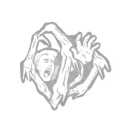
"Você sabe melhor do que ninguém que a luz no fim do túnel é apenas uma ilusão."
Sempre que você fisgar um Sobrevivente pela primeira vez, Nenhum Está Livre ganha +1 Ficha , até um máximo de 4 Fichas.
Assim que todos os Geradores são concluídas, nenhuma é gratuita e convoca a Entidade para desencadear o seguinte efeito:
Bloqueia todas as janelas e paletes verticais para um empilhamento de 12/14/16 segundos por Token, até um máximo de 48/56/64 segundos.
"Não estou errado. O que está errado é este mundo bagunçado!" — Ken Kaneki
O Xenomorfo
Um organismo perfeito, nascido da violência, projetado para matar.
O Xenomorfo emergiu da cavidade torácica de um hospedeiro chamado Kane e buscou abrigo nas sombras da Nostromo. À medida que trocava de pele, o Xenomorfo passou a compreender o ambiente. Usando os dutos de ar da nave, ele matou suas presas uma a uma, até que apenas o humano Ripley sobreviveu.
Desesperado por sobrevivência, Ripley destruiu a Nostromo e buscou refúgio em uma nave de fuga. Mas os instintos do Xenomorfo lhe deram vantagem. Enquanto a nave de fuga flutuava pelo espaço, o Xenomorfo espreitava, observando sua presa.
Assim que se preparava para o abate, a câmara de descompressão da nave se abriu e o Xenomorfo foi ejetado para o vácuo frio do espaço.
Tudo estava perdido. O Xenomorfo estava à beira da morte. E então, num instante, desapareceu em uma nuvem de névoa negra.
Instinto Alienígena
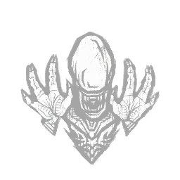
"Você é tão furtivo que às vezes parece que você apareceu do nada."
Sempre que você fisga um Sobrevivente, o Instinto Alienígena ativa:
A Aura do sobrevivente mais distante de sua localização atual que esteja no estado ferido é revelado a você por 8 segundos.
Causas que fazem o Sobrevivente sofrer com o AlheioIconStatusEffects oblivious.png Efeito de status por 40 / 50 / 60 segundos.
"A luz amarela é só para os meus olhos." — Dallas
Brutalidade Rápida
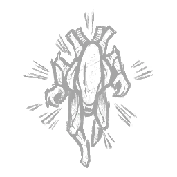
Você se move com uma velocidade e fúria que fazem o sangue gelar.
Você não pode mais ganhar a Sede de Sangue Efeito de status.
Atingir com sucesso um Sobrevivente com um Ataque Básico concede a você +5% de Aceleração Efeito de status por 8 / 9 / 10 segundos.
"Pegue-o, coloque-o na câmara de descompressão e livre-se dele." — Dallas
Arma Suprema
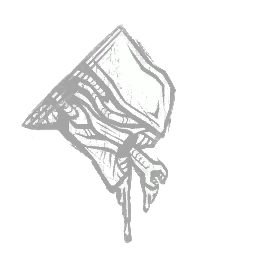
Quando eles te veem, eles sabem que o fim está próximo.
Abrindo um armário faz com que todos os sobreviventes em um raio de 32 metros sofram os seguintes efeitos:
Faz com que eles gritem e revelem sua localização para você.
Inflige a cegueiraIconStatusEffects vision.png Efeito de status por 30 segundos.
A Arma Suprema tem um tempo de recarga de 80/70/60 segundos.
"Não posso mentir sobre suas chances, mas... você tem minha simpatia." — Ash
Ghostface
Danny Johnson, conhecido como Jed Olsen por alguns, pegou o jornal do balcão da cozinha: tinha uma semana, mas seu rosto estava na primeira página, granulado e afundado. Era uma daquelas tardes abafadas na Flórida, quando o calor e a umidade permeavam tudo na cozinha, fazendo-o suar enquanto estava parado. Ele se acomodou em uma cadeira úmida para ler. Era melhor que este artigo fosse bom — seu trabalho em Roseville tinha sido excepcional. ROSTO FANTASMA DESAPARECE 18 de junho de 1993
À primeira vista, Jed Olsen era um freelancer modesto e entusiasmado, com experiência em diversos jornais de pequeno porte. A equipe do Roseville Gazette apreciou sua atitude tranquila e honesta, e por isso foi tratado como um estranho por não mais do que cinco minutos de entrevista:
"Jed rapidamente avistou o editor-chefe na sala, deu-lhe um sorriso largo e um aperto de mão firme, e falou sobre os bons e velhos valores americanos. E foi isso, ele estava lá." — Ex-colaborador do Roseville Gazette
Olsen nunca justificou sua trajetória profissional errática, que ziguezagueava entre diversas pequenas cidades, de Utah à Pensilvânia. Não havia comprovação de seus empregos anteriores. Ele tinha um portfólio decente e uma boa atitude, e eles precisavam de um colaborador imediatamente.
OS ASSASSINATOS DE ROSEVILLE
Olsen trabalhava no jornal havia cinco meses quando os assassinatos de Roseville começaram: vítimas, de jovens a idosos, esfaqueadas até a morte em suas casas. Pelos relatos, as vítimas pareciam escolhidas aleatoriamente, mas o assassino conhecia bem as casas. Os múltiplos ferimentos a faca indicavam um motivo pessoal. Nenhum vestígio de DNA foi encontrado. A polícia local ficou perplexa: os assassinatos foram cometidos com uma fúria semelhante a um crime passional, porém friamente premeditado.
O assassino também gostava de perseguir seus alvos. Duas vítimas relataram ter sido seguidas a caminho de casa por uma figura sombria, alguns dias antes de sua morte. O assassino as seguia desde o Walleyes, um pequeno bar em Northern Roseville, e tirava fotos delas em casa, enquanto procurava uma maneira de entrar. Ele podia observar a mesma vítima por semanas, registrando meticulosamente seus hábitos e rotinas. Quando sentia vontade de matar, visitava a vítima mais vulnerável de sua lista e invadia a casa silenciosamente.
Toda a equipe trabalhou na reportagem dos assassinatos de Roseville. Olsen era frequentemente enviado para entrevistar a família das vítimas e transmitir declarações oficiais da polícia. Sem que ninguém soubesse na época, seu envolvimento contribuiu para a contagem final de corpos.
O ROSTO FANTASMA
O pânico tomou conta de Roseville quando Olsen produziu a filmagem de uma figura encapuzada invadindo uma casa à noite. O rosto mascarado, um borrão branco no escuro, encarou a câmera por um segundo antes de desaparecer lá dentro. "O Rosto Fantasma Gravado" foi o artigo resultante, escrito por Olsen. Ele parecia orgulhoso de seu trabalho na época, apreciando o medo que toda a cidade tinha de suas histórias de fantasmas.
Semanas depois, Olsen deixou um bilhete em sua mesa de trabalho e desapareceu:
Espero que tenham gostado das minhas histórias — eu adorei dar vida a elas. Não se preocupem, ainda não terminei. – Jed Olsen
A polícia de Roseville ainda se recusa a comentar, pois Jed Olsen continua foragido.
Danny sorriu, arrancando o artigo do jornal. Quando a investigação apontou para ele, ele fez as malas e saiu rapidamente de Roseville.
Ele se levantou, o assento úmido repuxando sua pele. Uma umidade opressiva o envolveu ao entrar no quarto. A condensação pingava em uma pequena janela embaçada, enquanto pedaços de papel de parede rachado pendiam moles. Seu padrão floral estava coberto de fotos horríveis e manchetes de jornal. Danny prendeu o artigo de uma semana atrás em cima de uma foto de escalpos lacerados. Uma leve pontada de fome o atingiu, e ele se perguntou quando havia comido pela última vez. Teria sido esta manhã, enquanto lavava a faca e as roupas? Ou teria sido ontem à noite, depois de seguir aquela garota pela rua? Ele não conseguia se lembrar com clareza.
Dando um passo para trás, ele admirou seu trabalho na parede. Sua mente divagou, lembrando-se de todos os artigos que havia escrito, das histórias que havia planejado e das cenas que havia dado vida.
Um arrepio o percorreu. Uma brisa fria transformou a umidade do quarto em uma névoa opaca e congelante. Uma mulher gritou. Folhas mortas estalaram sob seus pés. Ele sorriu em antecipação.
Perseguição furtiva
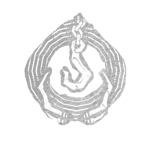
"Você se esconde nas sombras, eliminando suas vítimas uma por uma."
Depois de fisgar a Obsessão, Furtive Chase ativa seus efeitos primários por 14 / 16 / 18 segundos:
Concede o Efeito de status.
Concede +10% de Efeito de status.
Depois que a Obsessão é resgatada do Gancho, Furtive Chase ativa seu efeito secundário:
Faz com que o status de Obsessão seja transferido para o Resgatador.
Você só pode ficar obcecado por um Sobrevivente por vez.
"Você não tem ideia do que planejei para você. Vai ficar no noticiário por semanas. Vou garantir isso." — O Rosto Fantasma
Estou todo ouvidos
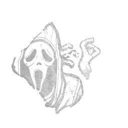
"Você aguça seus sentidos aguçados no Reino escuro da Entidade." Sempre que um Sobrevivente realiza uma ação de Salto Apressado a até 48 metros de sua localização, você se beneficia do seguinte efeito:
A Aura do Sobrevivente é revelado a você por 8 segundos.
I'm All Ears tem um tempo de espera de 60 / 45 / 30 segundos.
"Não precisa se preocupar. Eu me preparei a vida toda para isso." — The Ghost Face
Tremores emocionantes
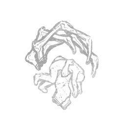
"Seus desígnios obscuros e compostura astuta despertam a Entidade." Após pegar um Sobrevivente, Tremores Emocionantes ativa seus efeitos:
Bloqueia todos os geradores não está sendo reparado por nenhum Sobrevivente por 16 segundos.
As Auras de Geradores Bloqueados são destacados para você em branco.
Tremores emocionantes têm um tempo de espera de 40 / 35 / 30 segundos.
"A noite me ajuda e aqui ela não tem fim." — The Ghost Face